The context
| 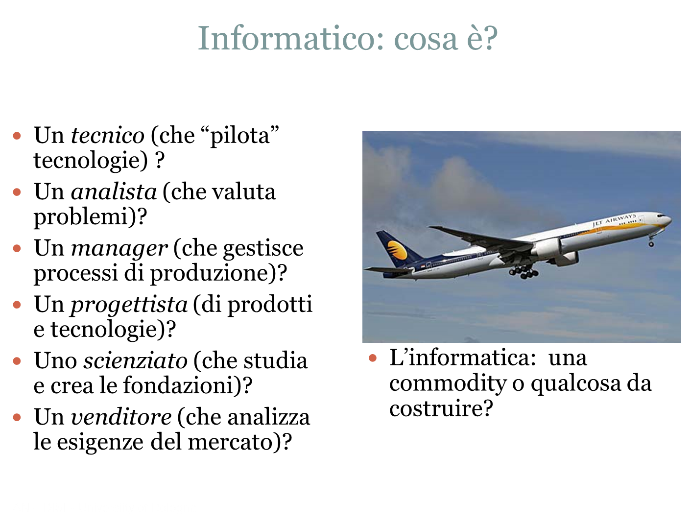 | 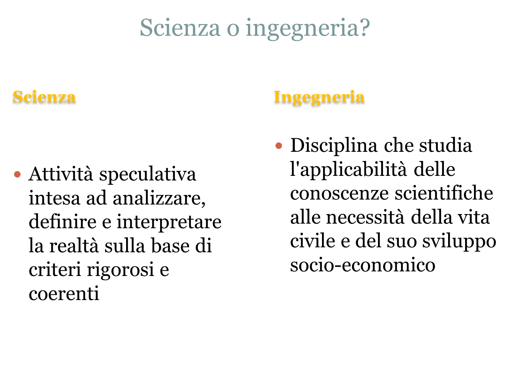 |
| 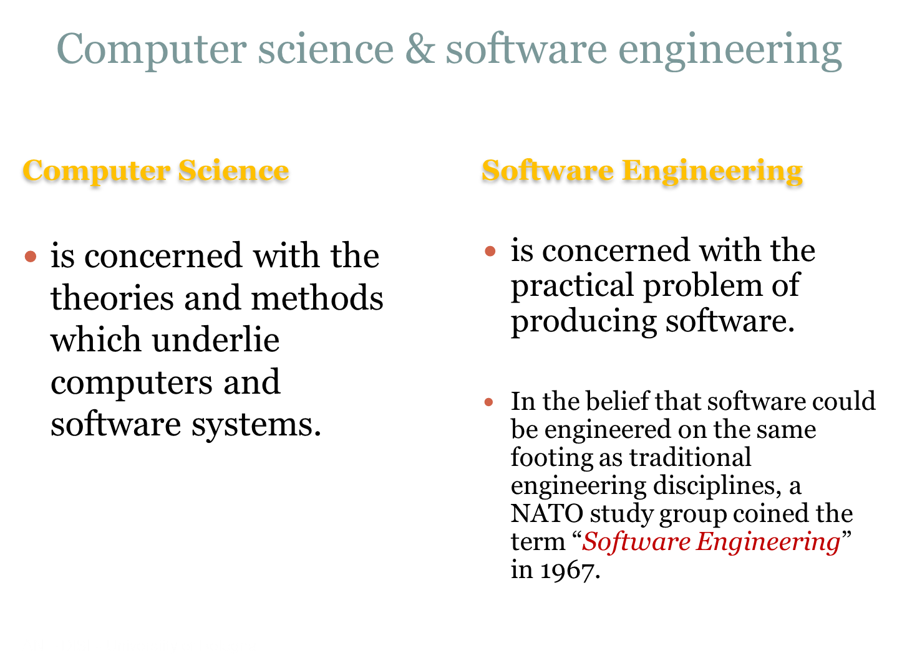 | |
| 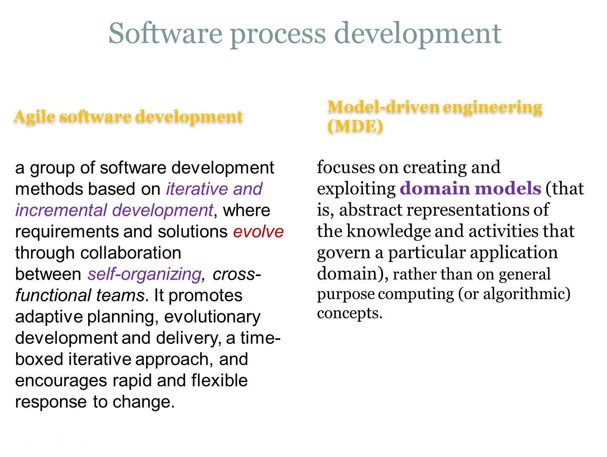 |
http://en.wikipedia.org/wiki/Model-driven_engineering http://en.wikipedia.org/wiki/Agile_software_development http://en.wikipedia.org/wiki/Scrum_(software_development https://www.comp.nus.edu.sg/~damithch/pages/SE-quotes.htm |
| 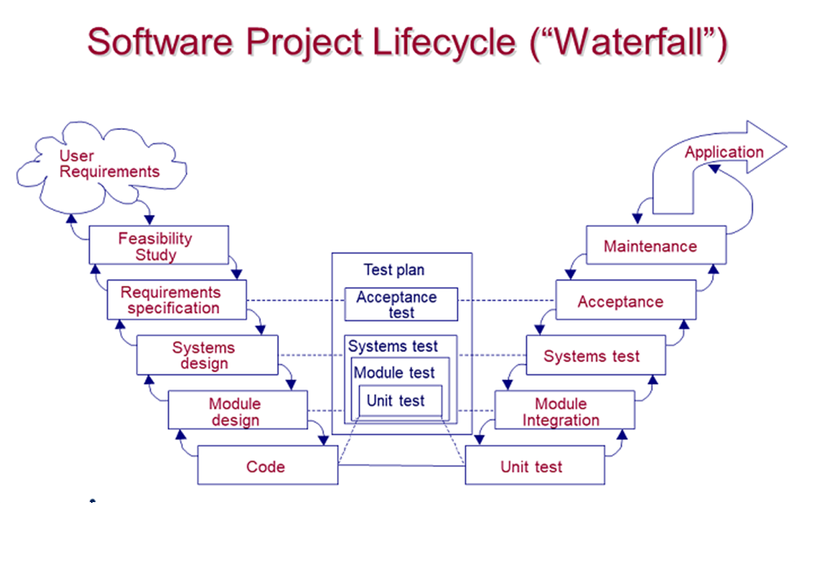 | Spiral model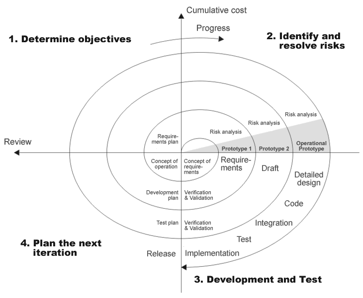 |
| 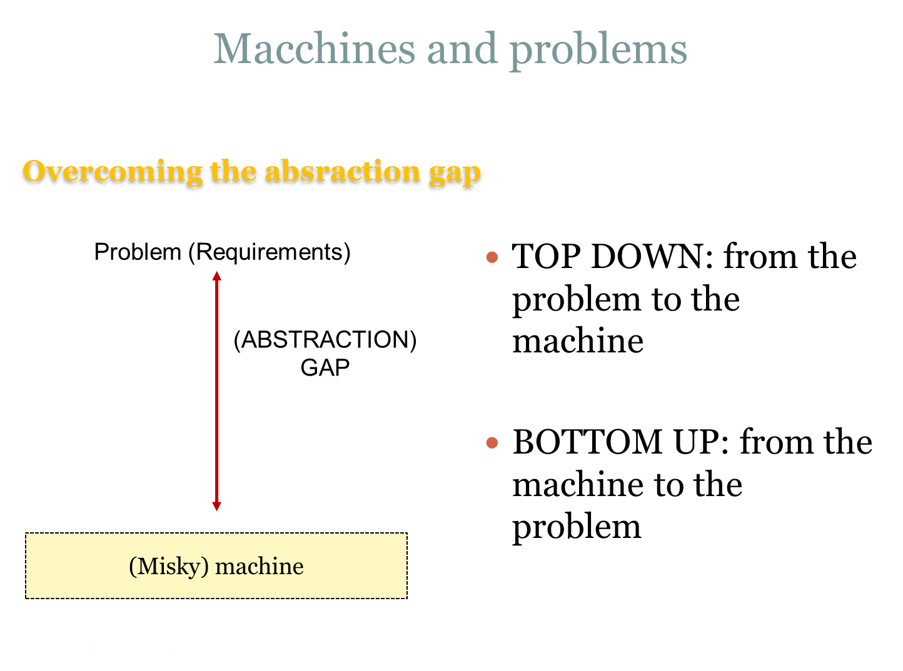 |
Turing machine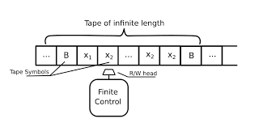Minsky machineCLR (r) INC (r) DEC (r) CPY (rj, rk) JZ (r, z) JE (rj, rk, z) |
Programming Languages |
LibrariesALibraries typically focus on a narrow scope. FrameworksA |
 |
 |
Development Bottom-up |
Development Top-down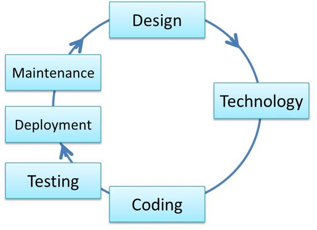 |
Design pattern GOF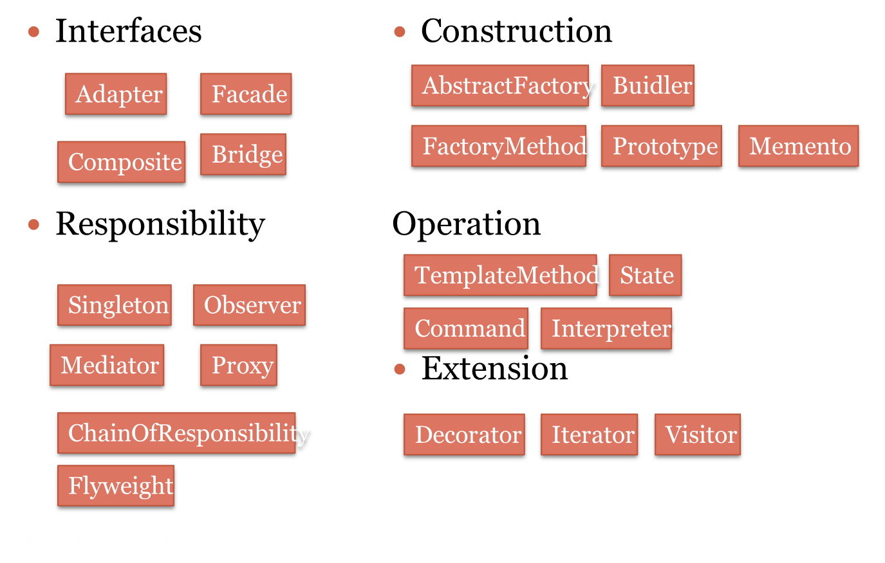 |
Design pattern POSA4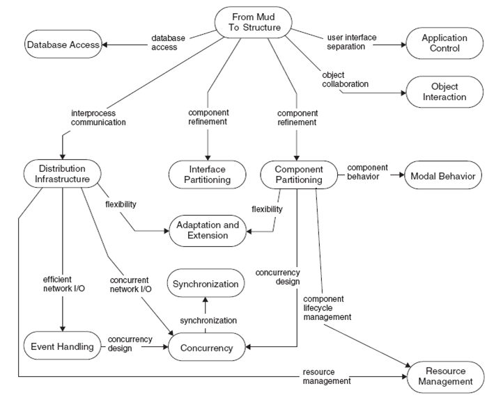 |
Motto (per il costruttore di software)
Non c’è codice senza progetto, non c’è progetto senza analisi del problema, non c’è problema senza requisiti.
|
Modello nella ingegneria del software
|
Representations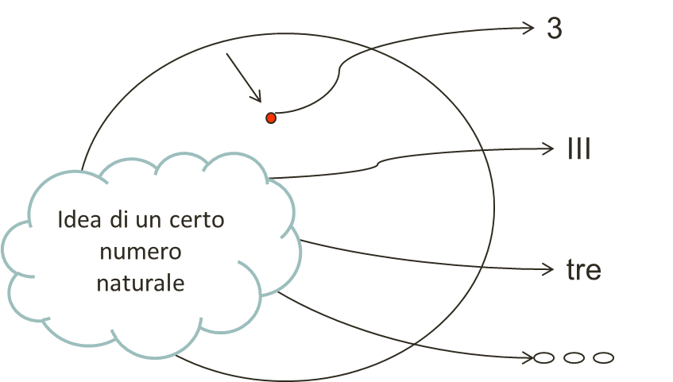 Quattro diverse rappresentazioni espresse in quattro differenti linguaggi dello stesso concetto (modello). |
>Symbols
|
Requirements and Testing
More than the act of testing, the act of designing tests is one of the best bug preventers known.
http://softwaretestingfundamentals.com/software-testing-quotes/ |

|

Agile development
 |
SCRUM (wikipedia) (SCRUM guide) |
A domain: Internet of Things (IOT)
 |
 |
A reference programming model : Microservices
What distinguishes a- 'Microservices' is a variant of the service-oriented architecture (SOA) architectural style that structures an application as a collection of loosely coupled services: services should be fine-grained and the protocols should be lightweight.
- Microservices emerged from: domain-driven design, continuos delivery, on-demand virtualization, infrastructure automation, small autonomous teams, systems at scale.
- Microservices improve modularity and makes the application easier to understand, develop and test.
- It also parallelizes development by enabling small autonomous teams to develop, deploy and scale their respective services independently.
- It also allows the architecture of an individual service to emerge through continuous refactoring.
- Microservices-based architectures enable continuous delivery and deployment.
- Microservices-based architectures introduce a number of new, non trivial challenges that require proper tools and frameworks to simplify the design and the
development of Microservices. For example, in Java world:
- Spring Boot
- Spring Cloud
- Docker
- Kubernetes
- EFK( Elasticsearch Fluentd, Kibanak)
- istio
- ...
Do we start from here?
Let us do a simple experiment ....
Distributed computing
- Distributed computing refers to the use of distributed systems to solve computational problems.
- In distributed computing, a problem is divided into many tasks, each of which is solved by one or more computers, which communicate with each other via message passing .
A new set of concepts is required .
| A set of (custom) symbols
to sketch, in informal way, distributed architectures on a sheet of paper. Formal (custom, executable) models will be introduced 'by need' after problem analysis. |
Application0
Requirements
Design and build a software system to control a- The robot is able to explore in a systematic and autonomous way a room,
- by showing (in real time) to the user (on a smartphone) a picture of the explored space.

|

|
\